I am a fourth-year at UC Berkeley, pursuing simultaneous degrees in political science and environmental economics and policy, and a minor in journalism. I have a strong passion for social and environmental justice issues and hope to pursue a career in international environmental law. I grew up in China and can speak Mandarin, English, and French.
In my free time, I love traveling, hiking, and photography. I started solo-traveling when I was 16 years old.
CHILDHOOD
1999 Born in China
I was born at night on July 23, 1999, in Shaanxi Province, China. During the night I was born, the moon was incredibly beautiful, so my parents called me "yueyue," meaning "moon" in Mandarin.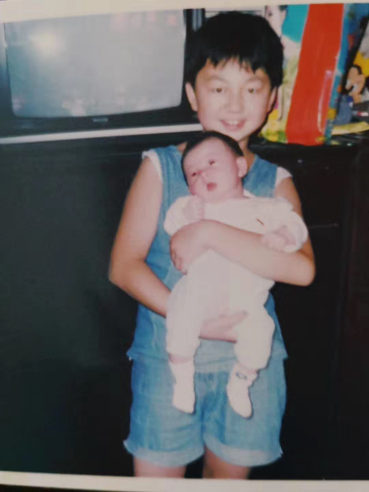
2002 Moved to Beijing
When I was three years old, my family moved to Beijing, where I spent most of my time growing up. Although many kids my age were forced to study advanced math, English, or ancient Chinese, my parents were very open-minded. They asked me what I wanted to learn and sent me to piano, painting, dancing, and singing classes. I used to dream of being a pianist like Lang Lang.
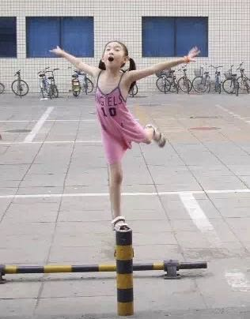
2008 Beijing Olympics
Many things happened in 2008: financial crisis, Wenchuan Earthquake, and the election of Barack Obama. The biggest event for me was the Beijing Olympics. That year, China was full of energy and hope, as the country opened up to the world. I went to a few Olympic games, including marathon, swimming, and fencing. I was excited to see foreigners in my city and was eager to learn English to communicate with them.
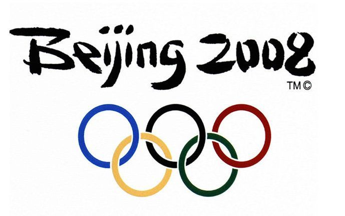
2011 Middle School
I went to one of the best middle schools in Beijing, which means I had to attend tutoring classes after school every day in order to do well in weekly exams. My classmates bullied me because my grades weren't good. My teachers did not want to be involved with clubs or Student Union because they thought it was a waste of time. My parents realized Chinese education wasn't the best fit for me, so they decided to send me abroad.
2014 International High School
I went to an international program for high school, where I was encouraged to join different clubs and explore my interests. My teachers were from different part of the world, which made me desire to travel and experience various cultures.
Teenage Years
2016 Volunteered in Tanzania
I went to Tanzania and volunteered in a special-needs school, where kids were mentally and physically disabled. I helped teach math and painting, and I've learned so much from daily interactions with the kids. That experience made me more humble. I hope to help more of these kids in the future.
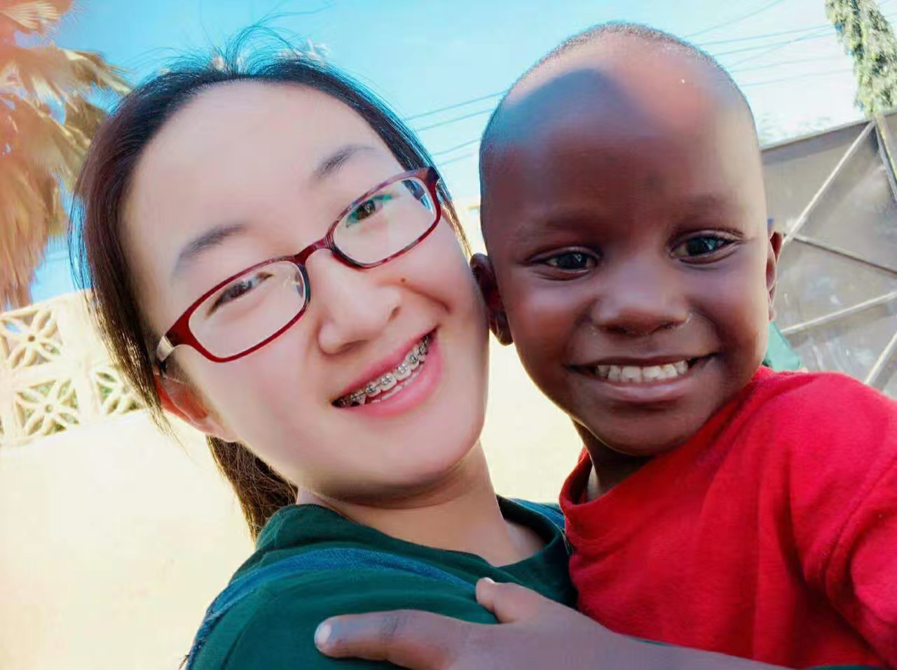
2017 Studied in Jerusalem
I studied abroad in Jerusalem for a month, where I travled in both Israel and Palestine. Witnessing how war and violence has changed my perspectives.
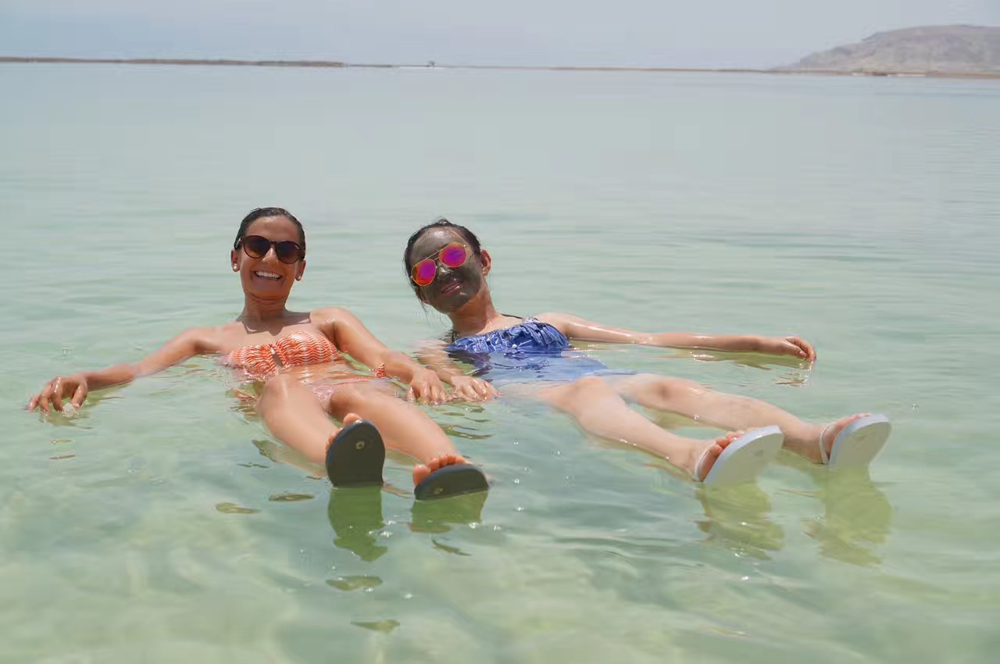
2017 Moved to Berkeley
I was woken up by the email notification on a Saturday morning, which turned out to be my admission letter to Berkeley. I was so excited that I was able to study at the no. 1 public university in the world. My parents were proud of me too.
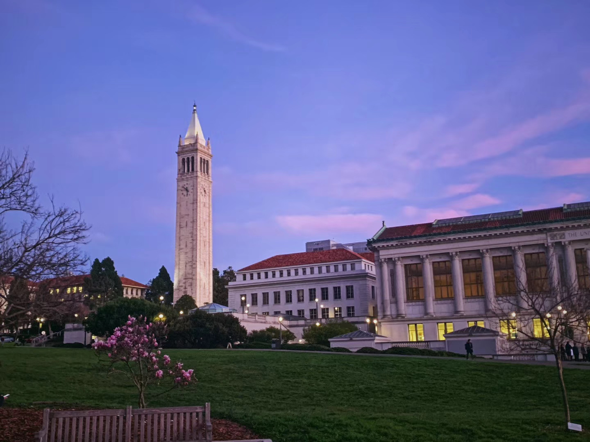
2019 Interned in DC
I interned in a think tank in DC for three months, where I researched environmental policy. I have found my passion for the environmental issues and hope to be an environmentla lawyer.
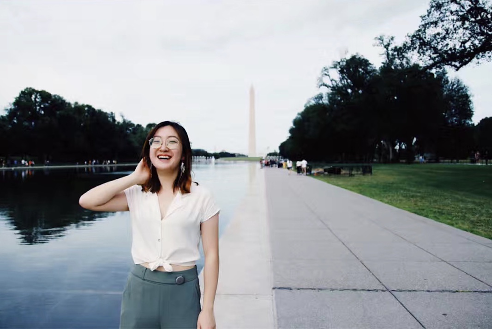
PHOTOGRAPHY
My dad gave me his old camera, Canon EOS 5D Mark II, on my 18th birthday. I have brought the camera with me wherever I traveled. I love candid photography, and I enjoy documenting people at their natural moments. Photography has been an essential part of my life, and it makes me realize that the world is full of beautiful things and miracles. All we need is a pair of eyes that can capture the beauty.
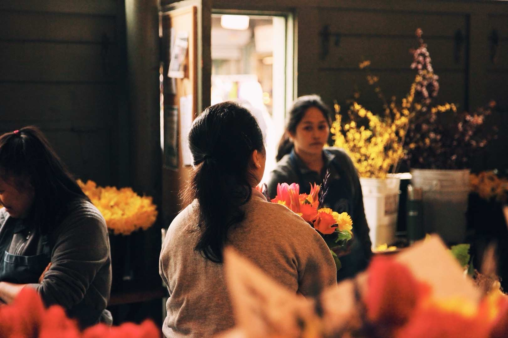
Pike Place Market
Seattle
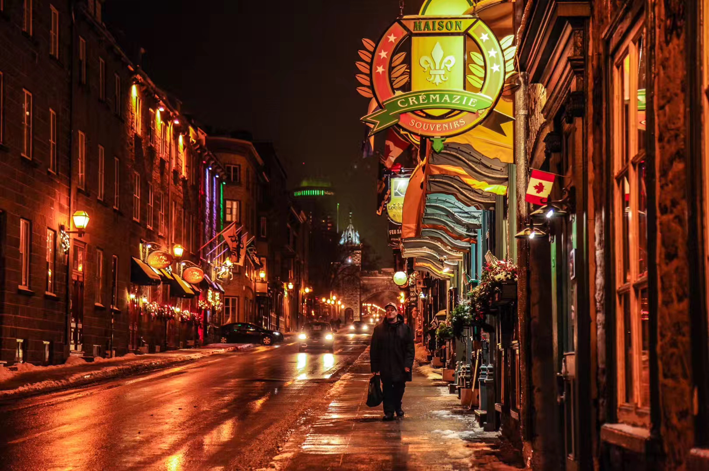
Quebec, Canada
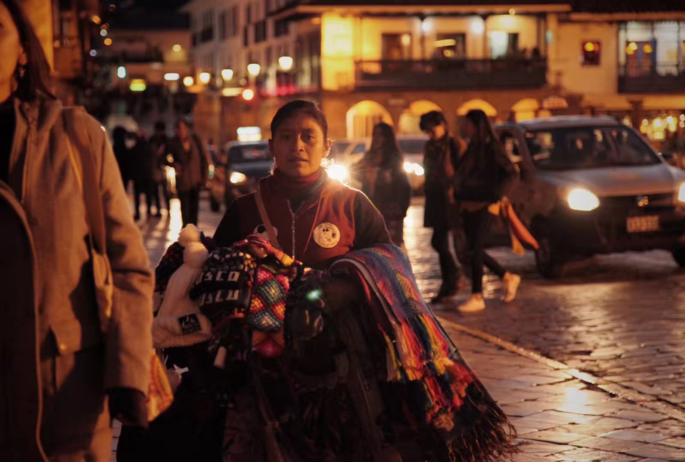
Cusco, Peru
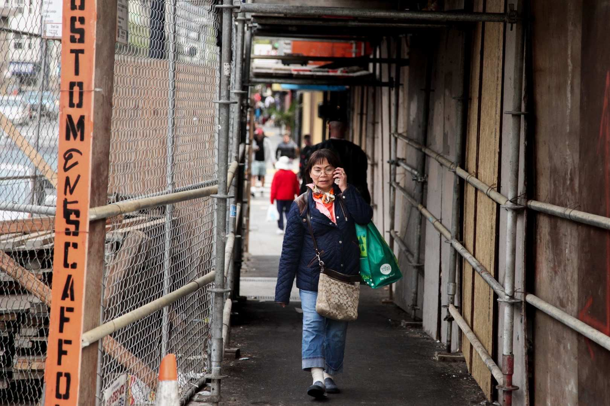
San Francisco,
California
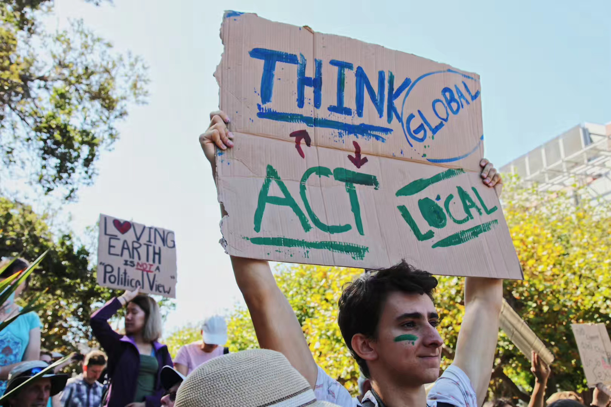
Climate Strike,
Berkeley
I interviewed my dad about what he thinks of my photography and me in general...
Me: What do you think of the photos I took?
Dad: I think they are beautiful. I don't know much about photography, so I can't give you many comments on this.
Me: Do you worry about me when I am traveing alone?
Dad: It's impossible not to worry about you. However, I trust you and know that you can take care of yourself. I think young people should go to travel and explore the world themselves. It will help them grow and make them more mature.
Me: What do you think of me?
Dad: I think you are a responsible, kind, grateful, curious, and hardworking person. You are mission-driven and know what you want to do in your life.
Me: Do you have any expectations about me?
Dad: No I don't. I just want you to be safe and happy :)
MULTIMEDIA PROJECT
In summer 2018, I volunteered in Coalition on Homelessness, a non-profit organization that helps homeless people in San Francisco. Inspired by my internship, I did a multimedia journalism project about homeless population in Berkeley. Learn more .